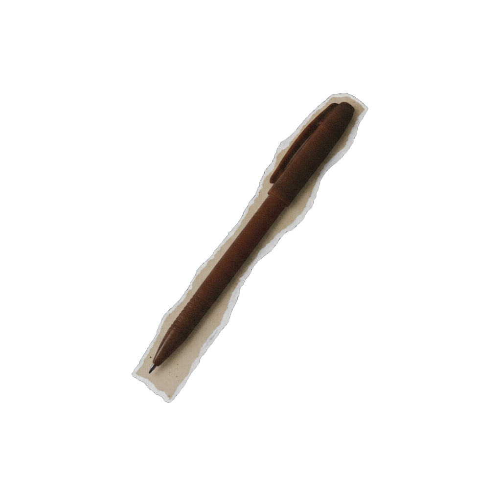

// penge- og banksystemet // kapitalforvaltning // international finans & geopolitik // finansiel suverænitet // penge- og banksystemet // kapitalforvaltning // international finans & geopolitik // finansiel suverænitet // penge- og banksystemet // kapitalforvaltning // international finans & geopolitik // finansiel suverænitet // penge- og banksystemet // kapitalforvaltning // international finans & geopolitik // finansiel suverænitet //
penge- og banksystemet // kapitalforvaltning // international finans & geopolitik // finansiel suverænitet // penge- og banksystemet // kapitalforvaltning // international finans & geopolitik // finansiel suverænitet // penge- og banksystemet // kapitalforvaltning // international finans & geopolitik // finansiel suverænitet // penge- og banksystemet // kapitalforvaltning // international finans & geopolitik // finansiel suverænitet //
TILMELDING
TILMELDING

↓
VIL DU MED?
VIL DU MED?
KOM MED
Pris: 300 kr.
Deltag fysisk på Studiestræde 24, København. Inkluderer vegetarisk aftensmad, forplejning og adgang til online materiale.
Efter tilmelding modtager du en bekræftelse på mail. Mere information følger inden første kursusgang den 22. april.
Tilmeld dig
SE MED
Pris: 150 kr.
Alle kursusgange optages og uploades efter kursusforløbet er afsluttet. Du får adgang til optagelserne samt online materiale.
Efter tilmelding modtager du en bekræftelse på mail. Mere information følger efter kursusforløbet afsluttes d. 13. maj.
Tilmeld dig